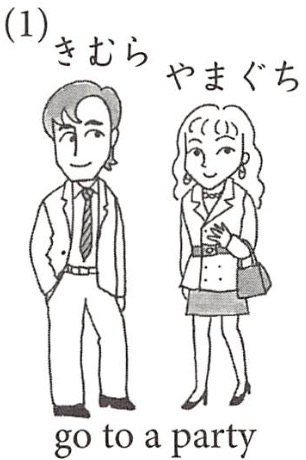
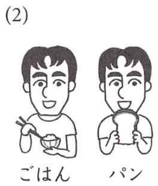
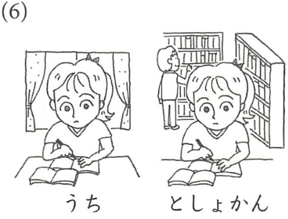
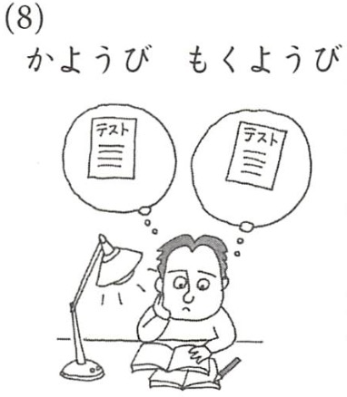
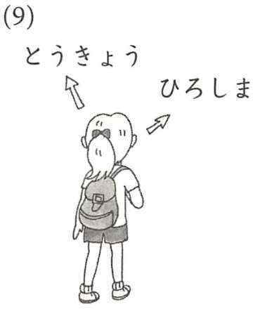
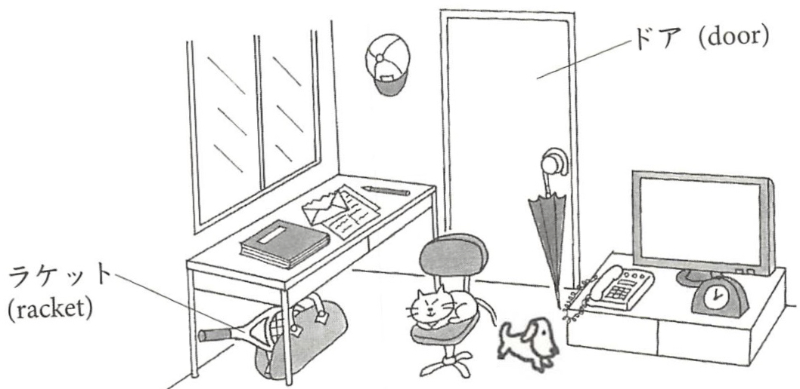

Existential 1: あります/います
Grammatical Construction:
あります/います express existence of something: あります for inanimate things and います animate. Also they can mean things are possessed by someone. The existent object is marked with 〜が and the possessor is marked with 〜は.
Example
- 火曜日に テストが あります。
There is a test on Tuesday - 今晩は パーティーが ありません。
There isn't a party tonight (oh no!). - 私は あにが います。
I have an older brother. - 山田さんは ともだちが いません。
Yamada-san doesn't have a friend.
| inanimate | animate | ||
|---|---|---|---|
| Polite/Present | |||
| Affirmative | Nagative | Affirmative | Nagative |
| あります | ありません | います | いません |
Note:
The negative copular 〜じゃありません and negative existential ありません should not be confused.
Your own sentence: Compose your own sentence based on the example sentences.
1 / 15
Existential 2: あります/います with a location
Grammatical Construction:
A location can be added to the あります・います constructions:
- Obj: Location〜に object-が います/あります
- Evt: Location〜で event-が あります
Example
- あそこに トムが います。
There is Tom over there. - 日本に 富士山が あります。
There is Mt. Fuji in Japan. - 山田さんのアパートで パーティーが あります。
There is a party at Yamada's apartment. - 日本で オリンピックが あります。
There will be Olympics in Japan.
Your own sentence: Compose your own sentence based on the example sentences.
2 / 15
Locative Expressions with です
Grammatical Construction:
In Chap 2, we saw the following constructions with deictic locatives:
図書館は カフェの前 です。- The library is in front of the café
図書館は
です。/
The library is
Now we learn constructions with locative nouns that are relative to the location of an given object:| あそこ |
|---|
| そこ |
| ここ |
| over there |
|---|
| there (near you) |
| here |
図書館は カフェの前 です。- The library is in front of the café
Example
| Yの |
|---|
| カフェの |
| みぎ(to the right of Y) | うえ(on/above Y) |
|---|---|
| ひだり(to the left of Y) | した(under/beneath Y) |
| まえ(in front of Y) | ちかく/そば (near Y) |
| うしろ(behind Y) | となり(next to Y) |
| なか(inside Y) |
Note:
Block
Your own sentence: Compose your own sentence based on the example sentences.
3 / 15
Locative Expressions with です (Continued)
Grammatical Construction:
The locative expressions can be used variously:
Example
- カフェは[図書館の中]です。
The café is in the library. - [図書館の中]に カフェが あります。
There is a café in the library. - [図書館の中]で パーティーが あります。
There will be a party in the library. - [図書館の中]で 山田さんを みました。
I saw Yamada-san in the library.
Note:
となり is used only when the things involved in the construction are in the same category. Otherwise, よこ/side is used:
- トムは ボブのとなり です。Tom is next to Bob.
- トムは テレビのよこ です。Tom is on the side of the TV
- トムは テレビのとなり です。Tom is on next of the TV
Your own sentence: Compose your own sentence based on the example sentences.
4 / 15
Capular です: Past and Present
Grammatical Construction:
| Affirmative | Negative | |
|---|---|---|
| Present | 〜です | 〜じゃないです |
| Past | 〜でした | 〜じゃなかったです |
Example
- 私は ブルックリン大学の学生 でした。- I was a student at Brooklyn College.
- あれは 日本の映画 じゃなかったです。- That was not a Japanese movie.
Note:
| Negative | |
|---|---|
| Present | 〜じゃありません |
| Past | 〜じゃありませんでした |
These two expressions are more formal and often used in the written language.
Your own sentence: Compose your own sentence based on the example sentences.
5 / 15
Verb: Polite Past and Present
Grammatical Construction:
| Affirmative | Negative | |
|---|---|---|
| Present | VSTEM-ます | VSTEM-ません |
| Past | VSTEM-ました | VSTEM-ませんでした |
Example
- 私は 8時に 晩ごはんを たべました。- I ate dinner at 8 o'clock.
- きのう ゲームを しませんでした。- I did not play games yesterday.
Your own sentence: Compose your own sentence based on the example sentences.
6 / 15
Using も for on an object and more
Grammatical Construction:
We have learned how to use も on a subject of a sentence:
ボブは きのう ゲームを しました。わたしも きのう ゲームを しました。
も can be used on an object or prepositional phrases (に, で, etc.)
ボブは きのう ゲームを しました。わたしも きのう ゲームを しました。
も can be used on an object or prepositional phrases (に, で, etc.)
Example
- ボブは [すし]を たべました。[ラーメン]も たべました。
- 私は [あに]が います。[あね]も います。
- ボブは [日本]に 行きます。ボブは [中国]にも 行きます。
- ボブは [東京]で ラーメンを 食べました。 [大阪]でも ラーメンを 食べました。
Note:
〜も replace 〜は, 〜が or 〜を while 〜も is suffixed to other case particles (e.g., 〜にも, 〜でも, etc.)
Your own sentence: Compose your own sentence based on the example sentences.
7 / 15
Duration expressions with without a particle
Grammatical Construction:
Hour(s) durational expressions can be derived by addiing 〜間 to the o'clock expressions and they are not suffixed by any case particle:
私は ボブを 一時間-∅ 待ちました。/I waited for Bob for an hour.
Example
| 1 | いちじ | 6 | ろくじ |
|---|---|---|---|
| 2 | にじ | 7 | しちじ |
| 3 | さんじ | 8 | はちじ |
| 4 | よじ | 9 | くじ |
| 5 | ごじ | 10 | じゅうじ |
- 二時間 本を 読みました。/I read a book for two hours.
- 一時間ぐらい 待ちました。/I waited for about an hour.
- 六時間半ぐらい ねました。/I slept for about six and a half hours.
Your own sentence: Compose your own sentence based on the example sentences.
8 / 15
A Quatity Abverb: たくさん many, much, plenty ...
Grammatical Construction:
たくさん (many/much) is added as an adverb when it modify an a direct object of a sentence. It is added right before or after 〜を (〜も/〜は): ... (たくさん) Dir.Obj.-を (たくさん) ...
Example
- ボブは 日本で たくさん ラーメンを たべました。
- ボブは 日本で ラーメンを たくさん たべました。
- きのうは たくさん 日本語を 勉強しました。
- きのうは 日本語を たくさん 勉強しました。
Note:
Quantity Adverbs: たくさん・いっぱい
Your own sentence: Compose your own sentence based on the example sentences.
9 / 15
Two Functions of と: [Noun and Noun] & [with A]
Grammatical Construction:
- と connect nouns: A と B (と C ...)
- [noun と] means `with noun' (never as instrumental `with a pen')
Example
- チーズバーガーとポテトを 食べました。
- ボブとトム(とジョン)は チーズバーガーを 食べました。
- 日本と韓国に 行きました。
- 私は ボブと ごはんを たべました。
- 私は ボブとトムと ごはんを たべました。
Note:
と can add a noun more than once (cf. 2).
Your own sentence: Compose your own sentence based on the example sentences.
10 / 15
Some Expressions:
More locative expressions
Xの前/in front of X can convey `across (the street) from X' or `opposite X' interpretations. Xのむかい is an equivalent expressions that has the `across from' or `opposite' expressions.
Example
- ボブの家は 図書館の前 です。/Bob's home is across from the library.
- ボブの家は 図書館のむかい です。/Bob's home is across from the library.
えっ & あっ
えっ and あっ are often used in colloquially. えっ would be translated into English as `what?' or `really' as you are surprised by or cannot believe something, and あっ is like `oh yeah' as you say when you suddenly remember or realized something.
Your own sentence: Compose your own sentence based on the example sentences.
11 / 15
4.12: Kanji / 漢字 (新しい漢字)
12 / 15
In-Class Exercises: A–C (Listening ・ Kanji↔かな ・ Verb Past)
Exercise A : Listening, True / False (TX p.102–103 / WB p.49 D)
Mary and Takeshi talk about their weekend. Listen for where they went, what time, and how long.
The instructor plays the recording (or reads the script) twice. Circle T or F; answer #3, #5, #7 in English.
メアリー & たけし ・ しゅうまつ
- Takeshi went to Kyoto on Saturday. ( T / F )
- Takeshi went with a friend. ( T / F )
- What time did Takeshi get up on Saturday? ______________ (English)
- There is a famous temple (おてら) in Kyoto. ( T / F )
- How long was the train ride? ______________ (English)
- Mary studied Japanese all weekend. ( T / F )
- What did Mary do on Sunday? ______________ (English)
Dialogue script & answers
メアリー：たけしさん、しゅうまつは なにを しましたか。
たけし：どようびに ともだちと きょうとに いきました。
メアリー：いいですね。なんじに おきましたか。
たけし：あさ ろくじに おきました。でんしゃで さんじかん ぐらい かかりました。
メアリー：きょうとに なにが ありますか。
たけし：きょうとには ゆうめいな おてらが あります。たくさん しゃしんを とりました。メアリーさんは？
メアリー：わたしは どようびに にほんごを べんきょうしました。でも、にちようびは えいがを みました。
Answers: 1. T · 2. T (ともだちと) · 3. 6:00 / six (in the morning) · 4. T · 5. about 3 hours (さんじかんぐらい) · 6. F (only Saturday; Sunday she saw a movie) · 7. She saw a movie (えいがを みました)
Exercise B : Kanji ↔ Hiragana, rewrite the underlined part (see Slide 4.12)
Kanji → write it in hiragana; hiragana → write it in the Lesson 4 kanji.
- にほん人が 五時はんに きます。
- げつようび
- きんようび
- うえに いきます。
- したに あります。
- バッグの中
Answer key
1. 人 → じん ・ 五時 → ごじ ・ はん → 半 (にほんじんが ごじはんに きます)
2. げつようび → 月曜日 · 3. きんようび → 金曜日
4. うえ → 上 · 5. した → 下 · 6. 中 → なか
2. げつようび → 月曜日 · 3. きんようび → 金曜日
4. うえ → 上 · 5. した → 下 · 6. 中 → なか
Lesson 4 kanji: 日 本 人 月 火 水 木 金 土 曜 上 下 中 半.
Exercise C : Verb chart, polite PAST ました / ませんでした (WB p.44, see Slide 4.6)
Fill in the polite past forms. NO KANJI.
| Gloss | Dictionary | Past Affirmative (〜ました) | Past Negative (〜ませんでした) |
|---|---|---|---|
| drink | のむ | ＿＿＿＿ | ＿＿＿＿ |
| go | ＿＿＿＿ | ＿＿＿＿ | ＿＿＿＿ |
| return | ＿＿＿＿ | かえりました | ＿＿＿＿ |
| do | する | ＿＿＿＿ | ＿＿＿＿ |
| read | よむ | ＿＿＿＿ | ＿＿＿＿ |
Answer key
drink: のむ → のみました / のみませんでした
go: いく → いきました / いきませんでした
return: かえる → かえりました / かえりませんでした
do: する → しました / しませんでした
read: よむ → よみました / よみませんでした
go: いく → いきました / いきませんでした
return: かえる → かえりました / かえりませんでした
do: する → しました / しませんでした
read: よむ → よみました / よみませんでした
Past = take the stem (〜ます form minus ます) and add ました / ませんでした.
13 / 15
In-Class Exercises: D–E (あります/います・と ・ Time & Duration)
Exercise D : Fill in the particle / expression (WB p.41 I & p.47, see Slides 4.1–4.2, 4.10)
NO KANJI. Use が ・ に ・ と ・ あります ・ います.
- くるま（ ）（ ）。 I have a car.
- ちゅうごく（ ）パンダ（ ）（ ）。 There are pandas in China.
- たけしさん（ ）きょうと（ ）いきます。 I will go to Kyoto with Takeshi.
- わたし（ ）あに（ ）います。 I have an older brother.
- つくえ（ ）うえ（ ）ほん（ ）あります。 There is a book on the desk.
Answer key
1. くるまが あります。
2. ちゅうごくに パンダが います。 (pandas are animate → います)
3. たけしさんと きょうとに いきます。
4. わたしは あにが います。
5. つくえの うえに ほんが あります。
2. ちゅうごくに パンダが います。 (pandas are animate → います)
3. たけしさんと きょうとに いきます。
4. わたしは あにが います。
5. つくえの うえに ほんが あります。
Existence: [place]に [thing]が あります／います. Living things (people, animals) take います; everything else あります. 〜と = "with (a person)".
Exercise E : Time vs. Duration, answer in Japanese (see Slide 4.8)
Write each in hiragana. Mind the difference between a clock time (〜じ + に) and a duration (〜じかん, no particle).
- How do you say "four o'clock"?
- How do you say "four hours"?
- "(I) slept about nine hours."
- "(I) went to sleep at nine o'clock."
- "(I) read a book for two hours."
Answer key
1. よじ · 2. よじかん
3. くじかん ぐらい ねました。
4. くじに ねました。
5. にじかん ほんを よみました。
3. くじかん ぐらい ねました。
4. くじに ねました。
5. にじかん ほんを よみました。
Clock time takes に (くじに); duration (〜じかん) takes no particle. "About" = ぐらい, "half" = はん (くじはん = 9:30, くじかんはん = 9½ hours). Note よじ / よじかん, not *しじ.
14 / 15
In-Class Exercises: F–H (Translation ・ も ・ Whereabouts)
Exercise F : Translate into Japanese, NO KANJI (WB p.43 II & p.45 II + たくさん)
- I ate a lot of ramen in Japan. (use たくさん)
- I studied Japanese a lot yesterday.
- On Saturday I went to Kyoto with a friend.
- There was a test on Tuesday.
- I was a high-school student. (past copula)
Answer key
1. わたしは にほんで たくさん ラーメンを たべました。 (or ラーメンを たくさん たべました)
2. きのう たくさん にほんごを べんきょうしました。
3. どようびに ともだちと きょうとに いきました。
4. かようびに テストが ありました。
5. わたしは こうこうせい でした。
2. きのう たくさん にほんごを べんきょうしました。
3. どようびに ともだちと きょうとに いきました。
4. かようびに テストが ありました。
5. わたしは こうこうせい でした。
たくさん goes right before or after the 〜を object. Past of あります = ありました; past copula = でした.
Exercise G : Describe each picture with two sentences using も (see Slide 4.7)
For each picture, write two similar sentences; in the second, mark the shared item with も. Remember も replaces は／が／を, but attaches to other particles (に→にも, で→でも).
(1) きむら・やまぐち go to a party

(2) ごはん・パン

(6) うち・としょかん

(8) かようび・もくようび

(9) とうきょう・ひろしま

Sample answers
(1) きむらさんは パーティーに いきます。やまぐちさんも いきます。 (subject は→も)
(2) ごはんを たべます。パンも たべます。 (object を→も)
(6) うちで べんきょうします。としょかんでも べんきょうします。 (で + も)
(8) かようびに テストが あります。もくようびにも テストが あります。 (に + も, time)
(9) とうきょうに いきます。ひろしまにも いきます。 (に + も, destination)
(2) ごはんを たべます。パンも たべます。 (object を→も)
(6) うちで べんきょうします。としょかんでも べんきょうします。 (で + も)
(8) かようびに テストが あります。もくようびにも テストが あります。 (に + も, time)
(9) とうきょうに いきます。ひろしまにも いきます。 (に + も, destination)
も replaces は／が／を (so パンも, not パンをも), but stacks on に and で (にも, でも).
Exercise H : Whereabouts, compose 2 locative sentences (see Slides 4.3–4.4)
Describe where things are in the room. Do not repeat the same position word. Pattern: [X]は [Yの + position]です ／ [Yの position]に [X]が あります。

Things in the room: つくえ ・ いす ・ テレビ ・ でんわ ・ とけい ・ ドア ・ まど ・ ぼうし(cap) ・ かさ ・ ラケット ・ かばん ・ ほん ・ ねこ ・ いぬ.Position words: うえ ・ した ・ なか ・ まえ ・ うしろ ・ となり ・ よこ ・ みぎ ・ ひだり ・ あいだ.
Sample answers
ほんは つくえの うえです。 ／ つくえの うえに ほんが あります。
ラケットは つくえの したです。 (the bag かばん is there too)
ねこは いすの うえに います。 (animate → います)
いぬは いすの まえに います。
とけいは テレビの となりです。 ／ でんわは テレビの まえです。
かさは ドアの よこです。 ／ ぼうしは まどと ドアの あいだです。
ラケットは つくえの したです。 (the bag かばん is there too)
ねこは いすの うえに います。 (animate → います)
いぬは いすの まえに います。
とけいは テレビの となりです。 ／ でんわは テレビの まえです。
かさは ドアの よこです。 ／ ぼうしは まどと ドアの あいだです。
Things use あります, people/animals (ねこ・いぬ) use います. となり pairs same-category items; よこ is the neutral "beside". Pick two that do not repeat a position word.
15 / 15